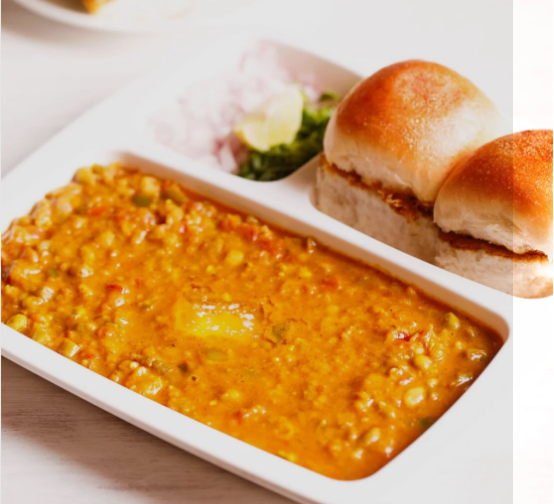

Pav Bhaji

Pav bhaji is a fast food dish from India, consisting of a thick vegetable curry, fried and served with a
soft
bread roll. Its origins are in the state of Maharashtra.
Pav Bhaji is a popular street food dish from India. It consists of a spicy and flavorful vegetable curry called
"bhaji" served with soft and buttery pav bread rolls. The bhaji is made by cooking a medley of mashed vegetables
with aromatic spices and served with a dollop of butter on top. The dish is garnished with finely chopped
onions, coriander leaves, and a squeeze of lemon juice for an extra tangy kick. It is a delicious and filling
dish enjoyed by people of all ages, perfect for a quick and satisfying meal.
Ingredients
- Mixed Vegetables - Like potatoes, carrot.
- Green Peas
- Pav Bhaji Masala
- Butter
- Pav
Steps
- Prepare ingredients as mentioned in the list.
- Boil the mixed vegetables along with peas, in a pressure cooker with 1 cup of water, for one whistle. Keep
aside.
- Heat oil in a pan, add chopped onions and fry till they turn golden brown. Add ginger garlic paste and fry
for 5 minutes. Add tomatoes, green chillies, turmeric powder, chilli powder, coriander powder, cumin powder,
and fry for a minute till all the masalas are well combined.
- Add the vegetables along with the water, MAGGI Masala ae Magic, salt and mix well. Mash the vegetables well
with a spoon. Add the amchur powder and mix well.
- Add the remaining 1 cup water and simmer for 2 minutes to get a thick gravy. Remove from fire and add the
lime juice and mix well.
- Garnish with coriander leaves and serve hot with Pav